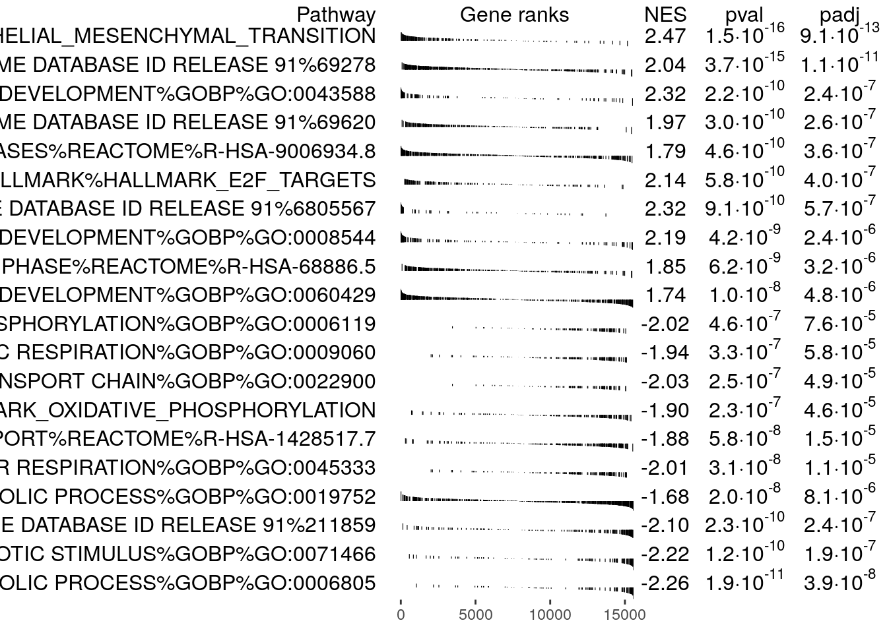

Chapter 3 Run fGSEA from within R
This notebook is based largely on the original notebook published with EnrichmentMap Protocol(Reimand et al. 2019)
3.1 Load in required libraries
#install required R and bioconductor packages
tryCatch(expr = { library("RCurl")},
error = function(e) {
install.packages("RCurl")},
finally = library("RCurl"))
tryCatch(expr = { library("fgsea")},
error = function(e) {
install.packages("fgsea")},
finally = library("fgsea"))
tryCatch(expr = { library("GSA")},
error = function(e) {
install.packages("GSA")},
finally = library("GSA"))3.2 function to write out fGSEA results
Create function to write out fgsea results files for each sample
write_sample_fgsea_results<- function(current_fgsea_results, current_results_dir,
current_sample){
current_sample <- current_sample
current_sample_directory_fullpath <- file.path(current_results_dir, current_sample)
if(!dir.exists(current_sample_directory_fullpath)){
dir.create(current_sample_directory_fullpath)
}
#calculate the rank at max
#fgsea returns the leading edge. Just need to extract the highest rank from
# set to get the rank at max
calculated_rank_at_max <- apply(current_fgsea_results,1,FUN=function(x){ max(which(names(current_ranks) %in% unlist(x[8])))})
fakeenr_current_sample <- cbind(current_fgsea_results$pathway,
current_fgsea_results$pathway,
"Details",
current_fgsea_results$size,
current_fgsea_results$ES,
current_fgsea_results$NES,
current_fgsea_results$pval,
current_fgsea_results$padj,
0,
calculated_rank_at_max,
apply(current_fgsea_results,1,
FUN=function(x){paste(unlist(x[8]),collapse=",")}))
colnames(fakeenr_current_sample) <- c("name","description","GS details","SIZE","ES","NES","pval","padj","FWER","Rank at Max","leading edge genes")
fakeenr_filename <- paste0(current_sample, "_fgsea_enr_results.txt",sep="")
fakeenr_filename_docker <- file.path(current_sample_directory_fullpath,fakeenr_filename)
write.table(fakeenr_current_sample ,
fakeenr_filename_docker,
col.name=TRUE,sep="\t",row.names=FALSE,quote=FALSE,fileEncoding="latin1")
# "upload" the files to the host machine and replace each path with the host machine path
#create a fake expression file
fakeexp <- data.frame(name = names(current_ranks),
description = names(current_ranks),current_ranks)
fakeexp_filename <- paste0(current_sample,"fakeexpression.txt",sep="")
fakeexp_name_docker <- file.path( current_sample_directory_fullpath,fakeexp_filename)
write.table(fakeexp,
fakeexp_name_docker,
col.name=TRUE,sep="\t",row.names=FALSE,quote=FALSE,fileEncoding="")
#create a rank expression file
fakernk <- data.frame(name = names(current_ranks),
current_ranks)
fakernk_filename <- paste0(current_sample,"fakeranks.rnk",sep="")
fakernk_name_docker <- file.path( current_sample_directory_fullpath,fakernk_filename)
write.table(fakernk,
fakernk_name_docker,
col.name=TRUE,sep="\t",row.names=FALSE,quote=FALSE,fileEncoding="")
}3.3 Configurable Parameters
Set the working directory as the directory to the directory where you downloaded all protocol files. For example /User/JohnSmith/EMProtocolFiles/data
# defined in the paramters at top of notebook
#directory where all the data files are found. For example - ./data/
working_dir <- params$working_dir
#directory where all the data files are found. For example - ./generated_data/gsea/
output_dir <- params$output_dir
if(!exists(output_dir)){
dir.create(output_dir)
}
#The name to give the analysis in GSEA - for example Basal_vs_Classical
analysis_name <- params$analysis_name
#rank file to use in GSEA analysis.
#For example - TCGA-PAAD_GDC_Subtype_Moffitt_BasalvsClassical_ranks.rnk
rnk_file <- params$rnk_file
#run_gsea - true/false
# This parameter is for the compilation of the notebook.
run_fgsea <- params$run_fgsea
#set the gmt file you want to use if you don't want to use the latest gmt file.
# For example, if you set dest_gmt_file =="" the below script will automatically
# download the latest gmt file from baderlab webstie. If it is set then it
# will use the file specified.
dest_gmt_file = ""3.4 Download the latest pathway definition file
Only Human, Mouse, Rat, and Woodchuck gene set files are currently available on the baderlab downloads site. If you are working with a species other than human (and it is either rat,mouse or woodchuck) change the gmt_url below to the correct species. Check here to see all available species.
To create your own GMT file using Ensembl see [Create GMT file from Ensembl]
if(dest_gmt_file == ""){
gmt_url = "http://download.baderlab.org/EM_Genesets/current_release/Human/symbol/"
#list all the files on the server
filenames = getURL(gmt_url)
tc = textConnection(filenames)
contents = readLines(tc)
close(tc)
#get the gmt that has all the pathways and does not include terms
# inferred from electronic annotations(IEA)
#start with gmt file that has pathways only and GO Biological Process only.
rx = gregexpr("(?<=<a href=\")(.*.GOBP_AllPathways_noPFOCR_no_GO_iea.*.)(.gmt)(?=\">)",
contents, perl = TRUE)
gmt_file = unlist(regmatches(contents, rx))
dest_gmt_file <- file.path(output_dir,gmt_file )
#check if this gmt file already exists
if(!file.exists(dest_gmt_file)){
download.file(
paste(gmt_url,gmt_file,sep=""),
destfile=dest_gmt_file
)
}
}
#load in the genesets.
capture.output(all_gs <- GSA.read.gmt(dest_gmt_file) ,file="gsa_load.out")
names(all_gs$genesets) <- all_gs$geneset.names3.5 Run fGSEA
(fGSEA)[https://bioconductor.org/packages/release/bioc/html/fgsea.html] is an R package that runs a fast Gene Set Enrichment Analysis.
In the below command the following options have been specified:
- pathways - list of genesets to use for the calculation
- stats - genes and their associated statistic, sorted
- max_size - maximum size for individual gene sets. In GSEA interface this is set to 500 but we prefer to use a more stringent setting of 200.
- min_size - minimum size for individual gene sets
start_time <- Sys.time()
if(run_fgsea){
#get the subset of genes that are protein coding.
current_ranks <- read.table(file.path(working_dir,rnk_file),header=TRUE,sep = "\t")
fgsea_ranks <- current_ranks[,2]
names(fgsea_ranks) <- current_ranks[,1]
current_ranks <- fgsea_ranks
#remove duplicated genes
duplicated_gene_names <-
names(current_ranks)[which(duplicated(names(current_ranks)))]
current_ranks <- current_ranks[which(!names(current_ranks) %in%
duplicated_gene_names)]
current_ranks <- sort(current_ranks,decreasing = TRUE)
set.seed(42)
current_fgsea_results <- fgsea::fgsea(all_gs$genesets,
sort(current_ranks,decreasing=TRUE),
minSize=15,
maxSize = 500
)
#write out the fgsea results for this patient
write_sample_fgsea_results(current_fgsea_results,output_dir,analysis_name)
}## Warning in write.table(fakeenr_current_sample, fakeenr_filename_docker, :
## invalid char string in output conversion
## Warning in write.table(fakeenr_current_sample, fakeenr_filename_docker, :
## invalid char string in output conversion
## Warning in write.table(fakeenr_current_sample, fakeenr_filename_docker, :
## invalid char string in output conversion
## Warning in write.table(fakeenr_current_sample, fakeenr_filename_docker, :
## invalid char string in output conversion3.6 Timing
GSEA started at 2025-04-23 14:10:31.589233
GSEA finished at 2025-04-23 14:10:50.267411
GSEA total running time -
## Time difference of 18.67818 secs3.7 Results presented as R table
topPathwaysUp <- current_fgsea_results[ES > 0][head(order(pval), n=10), pathway]
topPathwaysDown <- current_fgsea_results[ES < 0][head(order(pval), n=10), pathway]
topPathways <- c(topPathwaysUp, rev(topPathwaysDown))
plotGseaTable(all_gs$genesets[topPathways], current_ranks, current_fgsea_results,
gseaParam=0.5)